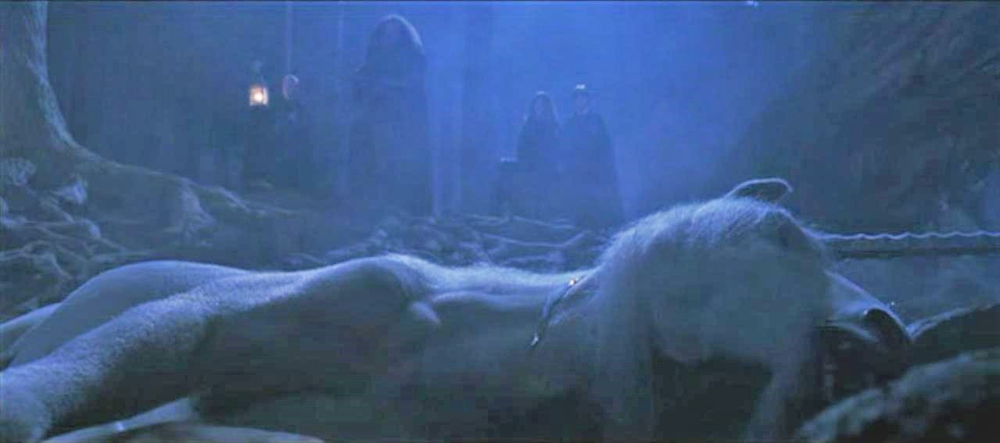
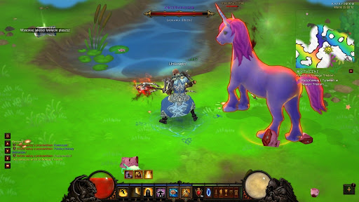

매체 속 유니콘
마이 리틀 포니 (My Little Pony, 2010~)
시리즈 『마이 리틀 포니』에는 다양한 종류의 말 캐릭터들이 등장하는데,유니콘 포니들이 그중에서 중요한 역할을 맡고 있다. 대표적인 캐릭터인 트와일라잇 스파클은 뿔을 통해 마법을 사용할 수 있으며, 이야기의 주인공 중 하나이다. 유니콘 포니들은 마법적 능력, 지식, 창의성 등을 상징하며, 시리즈 전반에서 긍정적인 역할을 맡는다. 이처럼 유니콘은 친근하면서도 강력한 힘을 지닌 존재로 묘사된다.
해리 포터 (Harry Potter, 2001~2011)

세계적인 베스트셀러 『해리 포터』 시리즈에 등장하는 유니콘은 금빛 털을 지닌 신비로운 생명체로, 주로 금지된 숲에 서식하는 것으로 묘사된다. 유니콘의 피는 치유 능력이 매우 뛰어나 어떤 병이나 상처도 낫게 할 수 있지만, 피를 마시는 자는 저주받은 생을 살게 된다는 설정이 있다. 『해리 포터와 마법사의 돌』에서는 볼드모트가 유니콘의 피를 마셔 생명을 연장하려는 장면이 등장하며, 여기서 유니콘은 단순히 아름다운 존재를 넘어 생명력과 순수함의 상징으로 표현되고 있다.
라스트 유니콘 (The Last Unicorn, 1968)
1968년 미국에서 출간돼 인기를 모은 소설 『라스트 유니콘』, 그리고 소설을 원작으로 만든 동명의 애니메이션 영화는 ‘세상에 남은 마지막 유니콘’을 주인공으로 내세운 이야기이다. 주인공 유니콘은 자신 외의 유니콘들이 모두 사라졌다는 소문을 듣고, 진실을 찾기 위해 인간 세계로 여정을 떠난다. 주인공 유니콘은 여정 중 마법에 의해 한때 인간의 모습으로 변하기도 하지만, 결국 본래의 정체성과 존재 의미를 되찾는다. 이 작품은 멸종, 자아, 존재의 본질에 대한 철학적 질문을 던지며, 단순한 판타지를 넘어 감성적이고 깊이 있는 서사를 담고 있다.
디아블로 III (Diablo III, 2012)
게임 『디아블로 III』에서는 본편과는 완전히 다른 분위기의 숨겨진 레벨인 ‘무지개 소젖 레벨 (Whimsyshire)’에서 유니콘이 등장한다. 이 곳에서는 알록달록하고 귀여운 유니콘들이 적으로 등장하며, 플레이어가 전투를 통해 쓰러뜨릴 수 있다. 유니콘은 무지개와 함께 폭발하거나 이상한 소리를 내며 죽음을 맞이한다. 순수하고 아름다운 유니콘의 전통적인 이미지를 비틀어 의도적으로 반전 효과를 노린 유쾌한 연출이다.